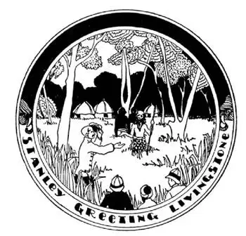

62
Afraid of the Dark
害怕黑暗

IT takes about two months to cross the Sahara Desert by camel from top to bottom, and there is no other way to go than by camel or airplane—no railroads, no auto roads, no roads of any kind. On the southern edge of the desert is a place called Timbuktu. When people want to describe a very long distance they often say, “from Kalamazoo to Timbuktu.” Kalamazoo is in Michigan in the United States and Timbuktu is in Africa. Timbuktu is the starting point for caravans going north across the Sahara to the countries along the Mediterranean and it is the ending point for caravans coming from those countries.
The Sahara has no rain, but south of the Sahara is a part of Africa called the Sudan, which has plenty of rain. The Sudan means “the land of the Black People.”
When-I-was-a-boy we used to say that God made white people in the day and black people at night. Some say black people are simply white people tanned by the sun, which is so hot where they live that the tan never wears off.
The Sudan has one great river called the Niger. Like the Nile, that other great river in Africa beginning with an “N,” the Niger fertilizes the land through which it runs. The Niger empties into the great Gulf of Guinea, a name which even intelligent people sometimes mix with Guiana in South America. Along the edge of the Gulf of Guinea are little countries, all of which except one belong to countries in Europe.
This one country, at the corner of the Gulf of Guinea, is called Liberia. It is like a tiny United States; in fact, it was copied after the United States, but the president and all the people are colored, and the way it came to be so is this:
When our country was first started, the white men wanted some one to do farming and other work for them. So pirates captured black people from the shores of Africa, brought them to the United States, and sold them as slaves, just as the pirates on the Mediterranean captured white people from ships on the sea and made slaves of them. All the colored people in the United States to-day are descended from these black slaves who were brought from Africa. Many people in our country thought these poor slaves, whose fathers and grandfathers had been stolen away from their homes in Africa, should be sent back to their own land. So when Monroe was President of the United States some of our colored people who had been set free and wanted to go “home” were put on a ship and sent back. Home was Home—even if it was a jungle. There they started this little country called Liberia, which means “Land of Liberty.” They named their capital Monrovia after President Monroe and named some of their villages after great cities here. Two of their villages they called New York and Philadelphia, although there are but a few hundred people in them. Instead of trying to forget the land where they had been enslaved they imitated it.
As you go farther south in Africa you reach the Equator. This is half-way land between the North and South Poles, and the second greatest river in Africa, called the Congo, runs through it. In this part of Africa it is hot and rainy every month in the year. Things grow and keep on growing. Grass grows as high as a room. Vines and trees and everything else grow so thick, so close together, and in such a tangle that one can hardly get through them. It is something like that other Equator land—in South America—the Selvas.
A hundred years ago people knew little or nothing about this part of Africa. It was an unhealthful and a dangerous country for the white man. The marshes and jungles gave white men fever, and there was a little fly called the tsetse which gave men a disease called sleeping sickness, from which they never awoke. Besides all these terrible things there were fierce wild animals that killed those who escaped other things.
And then there was born in Scotland a boy named David Livingstone. He was just like you or me until he was ten years old. But when he was ten years old he left school and went to work in a cotton mill. There he worked all day from six in the morning until eight at night. If you count this up you will find that it was fourteen hours a day he worked—and he was only ten years old. Every day in the week he worked this way, but when he went home at night he wasn’t through working. After his supper he would study until he fell asleep over his books. Livingstone’s one idea in life was to be of some good in the world and to help people who were sick and miserable. So he studied to be a doctor, and he decided he would go to China. He thought also they should be made Christians. So he learned to be a minister as well as a doctor. But he didn’t go to China at all. He was sent to Africa instead.
Every one said he would die, he would be stung by the deadly tsetse fly, or he would drink water that would give him a fever, or he would be devoured by some wild animal. “If I’m going to die,” said he, “it doesn’t matter which way. I’ll have to die some day, but I want to do some good before that day.” So he went to Africa.
Thirty years passed and though he went back home several times he always returned to Africa and at last he disappeared. He was given up for lost, and his countrymen thought him dead. But some people in our country got the idea that he might still be alive, so they sent a newspaper reporter named Stanley to look for him. They thought a reporter could find him if anybody could. Stanley landed on the west coast of Africa and asked the black men by signs if any one had seen a white man. Most of the black men said “no”—thirty years was too long a time to remember—in fact, most that were alive then were dead. But some black men said they had heard their fathers say that a white man had once passed through that way, and they pointed toward the east. So Stanley kept on going east and still east. After a long, long while he came to a long, long lake that has a long, long name—Tanganyika. When he reached this lake an old white man came to meet him. Stanley said, “Dr. Livingstone, I presume?” just as if he were greeting a stranger whom he had been sent to meet at the railroad station. Of course, it was Livingstone, and Stanley tried to get him to go back with him.
But Livingstone said, “No, my work is here, teaching the black people about God and curing their bodily diseases. I’ll not go back until I’m dead. When I am dead, then I want to go home to be buried in England.” So Stanley had to return without him.
Two years after that, with no one around him but black men, Livingstone died. He was on his knees at prayer when his black servant boy found him dead. All the black men loved him, and knowing that he wanted to be buried in England, they prepared his body by the sort of embalming they knew and bore it on their shoulders for eight hundred miles—it took two months—until they reached the coast. There they signaled a passing ship and asked that his body be taken to England. In England he was buried in Westminster Abbey, where the famous and great men of the World are buried.
Livingstone was so beloved by the black men that anything he told them to do they would do. His was a magic name. He made black people Christians.

They thought Livingstone was dead
他们认为利文斯通死了
There was an Arab chief with the funny name Tippoo Tib who used to catch black men as if they were wild animals, chain them, and ship them to other countries to be made slaves. Livingstone with his black men fought Tippoo Tib year after year, until at last he put an end to Tippoo Tib’s slave business. This is one of the big things Livingstone did.
Another thing Livingstone did was to make maps of the parts of Africa that no one knew about. He found the greatest waterfall in the World. These falls are twice as high and twice as broad as our Niagara Falls. The falls can be heard twenty miles away. He heard them sounding and resounding long before he reached them and asked the natives what the sound was. They said they are the falls of “sounding mist.” He named them Victoria after the Queen of England, who was then living. The Victoria Falls are in the River Zambezi. Far north of Victoria Falls is a lake which is also called Victoria. Victoria Lake is where the Nile begins. The Egyptians had known the Nile River, of course, some three or four thousand years before Christ, but none knew where the Nile began. It might have started in Heaven for all they knew.
【中文阅读】
骑骆驼从撒哈拉沙漠北边到南边，大约需要两个月的时间。除了骑骆驼或乘飞机，没有其他路可走——那里没有铁路，没有公路，没有任何一种路。在撒哈拉沙漠的南部边缘有一个叫延巴克图的地方。当美国人要描述一段很长的距离时，他们常说：“从卡拉马祖到廷巴克图。”卡拉马祖在美国的密歇根州，廷巴克图在非洲。廷巴克图是旅行队向北穿过撒哈拉沙漠到地中海沿岸城市的起点，也是来自那些国家的旅行队的终点。
撒哈拉沙漠不下雨，但是在撒哈拉沙漠之南有一个叫苏丹的非洲地区，却有充沛的雨水。“苏丹”的意思是“黑人的土地”。小时候，我们常说上帝在白天创造了白人，在夜晚创造了黑人。有些人说黑人只不过是被太阳晒黑的白人，他们居住的地方太热，所以黑色褪不掉了。
苏丹有一条大河叫尼日尔河。和尼罗河一样，非洲这条大河的名字也是以“尼”字开头的。尼日尔河使其流域的土地变得非常肥沃。尼日尔河最终流入几内亚湾，即使是聪明人有时也会把“几内亚”这个名字和南美的“圭亚那”混淆 [1] 。几内亚湾沿岸有许多小国，除了其中一个之外，其他都属于欧洲的国家。
这个不属于欧洲的国家，位于几内亚湾的角落里，叫利比里亚。它像一个极小的美国，事实上，利比里亚就是仿照美国建立的，但是利比里亚的总统和人民都是黑人。它的发展历史是这样的：
美国刚建国时，美国的白人需要有人替自己干农活和其他粗活，于是，海盗就从非洲沿岸抓了很多黑人，带到美国，卖给白人当奴隶，就像过去地中海上的海盗抢劫过往船只抓了白人，让他们成为自己的奴隶一样。今天美国的所有黑人都是过去从非洲带来的这些黑人奴隶的后代。许多美国人认为，这些可怜奴隶的父亲和祖父是从非洲的家园被偷来的，应该将他们送回他们的故土。于是，在门罗当总统期间（美国第五任总统），一些恢复了自由并想“回家”的黑人就被送上船，回到非洲。家就是家——即使它是一片丛林。他们在那儿建立这个名叫利比里亚的小国家，“利比里亚”意思是“自由之地”。他们以总统门罗的名字把首都命名为“蒙罗维亚”，并以美国一些大城市的名字给自己的一些村庄命名，其中有两个村庄分别叫“纽约”和“费城”，尽管村子里只有几百人。他们不是试图忘掉他们曾经受奴役的地方，反倒要仿效那里的一切。
从利比里亚再往南走，就到了赤道，赤道是离南北两极距离相等的地方，非洲的第二大河叫刚果河，就流经此处。非洲的这块地方终年炎热，每个月都下雨，所以植物很容易生长，不停地生长。草长得和房子一样高。各种藤本植物和树，以及其他一切植物都长得极为茂盛，密密匝匝地纠缠在一起，人很难穿过。这里很像另一个赤道地区——在南美洲——亚马孙河沿岸的热带雨林。
一个世纪以前，人们对非洲的这块地方所知甚少或一无所知。对白人来说，这是一个不利于健康、不安全的地方。白人待在这里，经常患一种热病，而且还有一种很小的苍蝇叫舌蝇，人被咬后会患一种叫“昏睡病”的疾病，睡着后就再也醒不过来了。除了这些令人恐怖的事物，那里还有凶猛的野兽，那些有幸逃脱其他危险的人，往往又被野兽咬死。
后来，有一位名叫大卫 · 利文斯通的小男孩在苏格兰出生。他在10岁前，和你我小时候一样，没什么特别之处。但他在10岁的时候，离开了学校，在一家棉 纺厂干活。在那儿，他每天从早晨6点一直做到晚上8点。如果你算一下，你会发现他一天干14个小时的活，而他只是个10岁的孩子。每周的每一天他都这样辛苦工作。但是，晚上回家后，他并没有休息，晚饭后，他就开始读书，直到趴在书本上睡着了。利文斯通的人生计划就是为这个世界作点贡献，帮助那些身患疾病和生活不幸的人。于是，他学习医学，还决定去中国。所以利文斯通不仅学了医学，还学了神学。但是他后来根本没有去中国，而是被派往非洲。
人人都说他去了会死，不是被致命的舌蝇叮咬，就是会喝那里的水患上热病；或者会被某个野兽吃掉。“如果我要死了，”他说，“怎么死都没有关系。我总有一天会死的，但是我想在那一天来临之前，做一些好事。”于是，利文斯通去了非洲。
三十年过去了，尽管利文斯通回了几次家，他总是又返回非洲。最终他消失了。人们认为他失踪了，对找到他不再抱有任何希望。他的同胞认为他死了。但是在美国有一些人猜想他可能还活着，于是就派了一位名叫斯坦利的记者去找他。他们认为如果有什么人能找到利文斯通的话，那么记者就能做到。斯坦利在非洲西海岸上岸，用手势问那里的黑人是否看见一个白人。大多数黑人都表示“没有”——三十年的时间确实太长了，当时的事没有人记得了——事实上，大多数那时候活着的人现到都不在人世了。但是一些黑人说，他们听他们的父辈说过，有一个白人曾经朝那个方向走去，说着还指向东方。于是，斯坦利继续往东走，一直往东走。经过了很长一段时间，他看到了一个长长的湖，这个湖有个长长的名字——坦噶尼喀湖。当他到达湖边时，有位年老的白人过来迎接他，斯坦利说，“您就是利文斯通医生吧？”就像他被派去火车站迎接一位陌生人那样招呼对方。当然，他就是利文斯通。斯坦利试图说服利文斯通和自己一起回去。
但是，利文斯通说，“不，我的工作在这儿。我要引导这里的黑人信仰上帝，并治愈他们身体上的疾病。我死了才回去。等我死了，那时我希望回家，葬在英国。”于是，斯坦利只能自己一个人回去了。
两年后，利文斯通去世了，身边只有一些黑人陪伴着。当时，他正跪着在祷告，他的黑人仆人发现他已经死了。当地所有的黑人都很爱戴他，知道利文斯通希望死后葬在英国。他们以自己的方法，用香料对将利文斯通的身体做了防腐处理，用肩膀抬着他的遗体，走了800英里——花了两个月的时间——最终到了海边。在海边，他们向一艘过往的船发出信号，请求将利文斯通的尸体带回英国。回到英国，他被安葬在威斯敏斯特大教堂，世界上一些名人和伟人 都葬在这里。
利文斯通深受当地黑人的爱戴，凡是他吩咐的，他们都会去做。连他的名字都具有魔力。他教诲黑人信仰基督教。
曾有一个阿拉伯首领，他的名字，引人发笑，叫蒂普 · 蒂布。他常常抓黑人，好像他们是野生动物一样，用链子拴住他们，把他们运到其他国家，然后卖给别人当奴隶。利文斯通与黑人一起同蒂普 · 蒂布斗争了一年又一年，最后，利文斯通终于让蒂普 · 蒂布终止了他的奴隶买卖。这是利文斯通所作的重大贡献之一。
利文斯通所做的另一贡献是绘制了非洲一些地区的地图，这些地区当时还无人知晓。他发现了世界上最大的瀑布。这个瀑布的高度和宽度是尼亚加拉大瀑布的两倍。在20英里之外就可以听到瀑布声。他在离这个瀑布很远的地方，就听到水的轰鸣声，就问当地人这声音是什么。他们说这是瀑布，“它有会发声的雾”。他以当时英国女王的名字将瀑布命名为“维多利亚”。维多利亚瀑布位于赞比西河。在维多利亚瀑布以北很远的地方，有一个湖泊也叫“维多利亚”。维多利亚湖泊是尼罗河的源头。当然，大约在耶稣诞生三四千年前，埃及人就知道尼罗河了，但是，没有人知道尼罗河发源于哪里，说不定他们认为尼罗河发源于天堂呢。